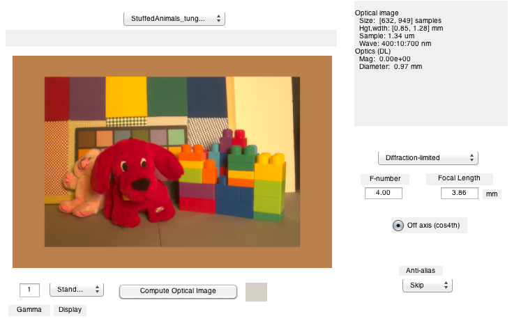
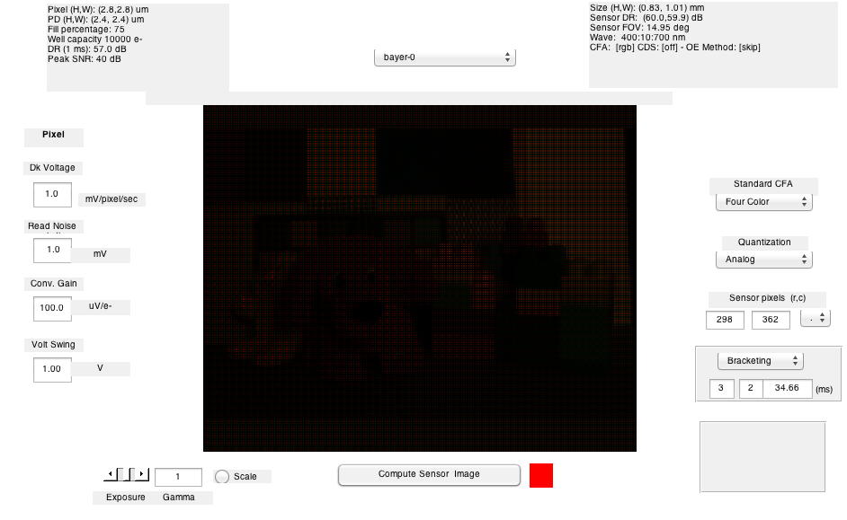

t_ExposureValue
Tutorial on setting the camera exposure value and bracketing
Setting the exposure value is an extremely important control decision for the camera controller: image quality depends strongly on this algorithm. One of the great values of high-dynamic range sensors is that they are robust to exposure value algorithm errors.
The term 'exposure value' refers to the joint setting of exposure time and the size of the aperture (f/#). Longer times and larger apertures increase the number of photons incident at the sensor surface. The formula for exposure value and the computation are described in the ISET function exposureValue.m. This function is not part of ISETBIO, but since this tutorial runs under ISETBIO and it is fun. we kept it around.
The goal of the exposure value algorithm is to put enough photons into the sensor pixels so that the pixels are operating in a high signal-to-noise range and are not saturated. When there is a high dynamic range image, it may be impossible for this condition to be satisfied for the entire image, so compromises may be made.
Since exposure value algorithms must operate quickly, and since some parts of the image are more important than others, it is common to sample only regions near the center of the image.
This script illustrates the effect of different exposure times and f/# choices on sample images.
Copyright ImagEval Consultants, LLC, 2010.
Contents
Initialize ISET, if you like
s_initISET;
Choose an HDR scene
%fName = fullfile(isetRootPath,'data','images','multispectral','Feng_Office-hdrs.mat'); fName = fullfile(isetRootPath,'data','images','multispectral','StuffedAnimals_tungsten-hdrs.mat'); scene = sceneFromFile(fName,'multispectral'); % Set the field of view to 15 deg fov = 15; scene = sceneSet(scene,'fov',fov);
Reading multispectral data with mcCOEF. Saved using svd method
Create the optical image
oi = oiCreate; oi = oiCompute(scene,oi); % Notice that this is a very high dynamic range scene. The window is very % bright and the region under the desk is very dark. Set the display Gamma % value (text at the lower left) to 0.3 to be able to see all the parts of % the image. vcAddAndSelectObject(oi); oiWindow;
Create a sensor and capture the image
Here is a VGA sensor
sensor = sensorCreate; sensor = sensorSetSizeToFOV(sensor,fov,scene,oi); % Let's use the exposure bracketing feature of ISET sensorCompute to % calculate a series of images at different exposure durations. We can % do this with the bracketing method in sensorCompute. expTimes = [0.005 0.010 0.050 0.100 0.2]; sensor = sensorSet(sensor,'Exposure Time',expTimes); sensor = sensorCompute(sensor,oi); sensor = sensorSet(sensor,'ExposurePlane',3); % Look through the exposure durations in the window, using the gui. % The relevant slider is towards the lower left of the gui window. vcAddAndSelectObject(sensor); sensorImageWindow;